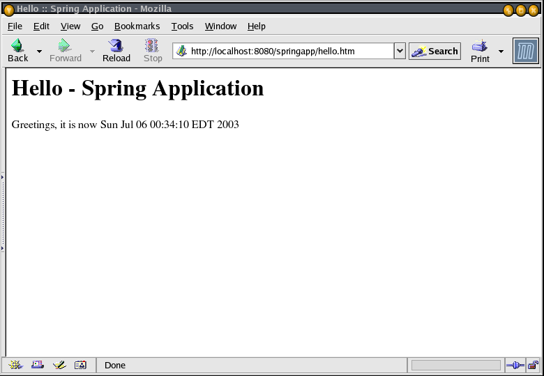
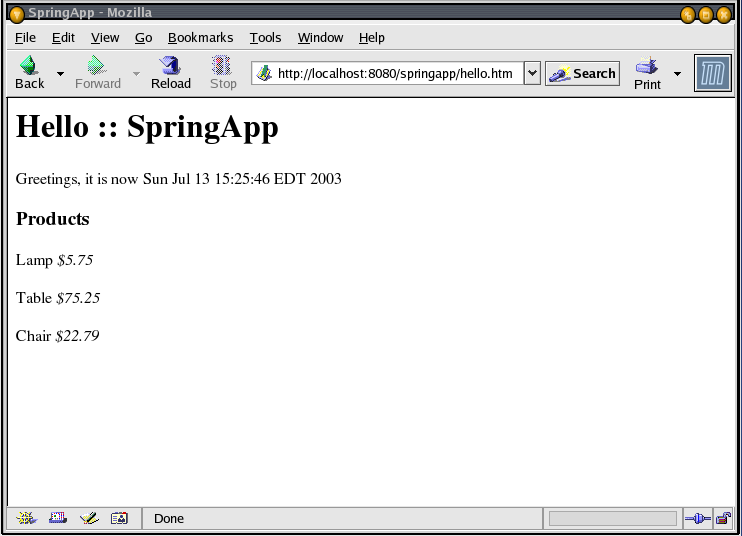

Developing a Spring Framework MVC applicaton step-by-step
Part 2 – Developing and Configuring the Application
Thomas Risberg
July, 2003
This is Part 2 of a step-by-step account of how to develop a web application from scratch using the Spring Framework. In Part 1 (Steps 1 – 12) we configured the environment and set up a basic application that we will build upon.
This is what we have to start with.
An intoduction page index.jsp.
A DispatcherServlet with a corresponding springapp-servlet.xml configuration file.
A controller springappController.java.
A view hello.jsp.
We will now improve on these parts to build a more useful application.
Step 13 – Improve index.jsp
We will make use of JSP Standard Tag Library (JSTL) so I will start by copying the JSTL files we need to our WEB-INF/lib directory. Copy jstl.jar and standard.jar from the spring-framework-0.9/lib/jstl directory to the springapp/war/WEB-INF/lib directory. I am also creating a “header” file that will be incuded in every JSP page that I'm going to write. This will make development easier and I will be sure that I have the same definitions in all JSPs. I am going to put all JSPs in a directory named jsp under the WEB-INF directory. This will ensure that only the controller has access to the views - it is not possible to get to these pages by entering them directly as a URL in the browser. This strategy might not work in all application servers and if this is the case with the one you are using, just move the jsp directory up a level. You would then use springapp/war/jsp as the directory instread of springapp/war/WEB-INF/jsp in all the code examples that will follow.
|
springapp/war/WEB-INF/jsp/include.jsp |
<%@ page session="false"%> <%@ taglib prefix="c" uri="http://java.sun.com/jstl/core" %> <%@ taglib prefix="fmt" uri="http://java.sun.com/jstl/fmt" %> |
Now we can change index.jsp to use this inlude and since we are using JSTL we can use the <c:redirect> tag for redirecting to our Controller. This ties the index.jsp into our application framework.
|
springapp/war/index.jsp |
<%@ include file="/WEB-INF/jsp/include.jsp" %> <%-- Redirected because we can't set the welcome page to a virtual URL. --%> <c:redirect url="/hello.htm"/> |
Step 14 – Improve the view and the controller
I am going to move the view hello.jsp to the WEB-INF/jsp directory. The same include that was added to index.jsp gets added to hello.jsp. I also add the current date and time as output that I will retrieve from the model, passed to the view, using the JSTL <c:out> tag.
|
springapp/war/WEB-INF/jsp/hello.jsp |
<%@ include file="/WEB-INF/jsp/include.jsp" %>
<html>
<head><title>Hello :: Spring Application</title></head>
<body>
<h1>Hello - Spring Application</h1>
<p>Greetings, it is now <c:out value="${now}"/>
</p>
</body>
</html>
|
For SpringappController.java there are a few changes we need to make. Change the view to WEB-INF/jsp/hello.jsp since we moved the file to this new location. Also add a string contining the current data and time as the model.
|
springapp/src/SpringappController.java |
import com.interface21.web.servlet.mvc.Controller;
import com.interface21.web.servlet.ModelAndView;
import javax.servlet.ServletException;
import javax.servlet.http.HttpServletRequest;
import javax.servlet.http.HttpServletResponse;
import java.io.IOException;
import org.apache.commons.logging.Log;
import org.apache.commons.logging.LogFactory;
public class SpringappController implements Controller {
/** Logger for this class and subclasses */
protected final Log logger = LogFactory.getLog(getClass());
public ModelAndView handleRequest(HttpServletRequest request, HttpServletResponse response)
throws ServletException, IOException {
String now = (new java.util.Date()).toString();
logger.info("returning hello view with " + now);
return new ModelAndView("WEB-INF/jsp/hello.jsp", "now", now);
}
}
|
Now we are ready to try this after we build and deploy this new code. We enter http://localhost:8080/springapp in a browser and that should pull upp index.jsp, which should redirect to hello.htm, which in turn gets us to the controller that sends the data and time to the view.

Step 15 – Decouple the view and the controller
Right now the controller specifies the full path of the view, which creates an unnessecary dependency between the controller and the view. Ideally we would like to map to the view using a logical name, allowing us to switch the view without having to change the controller. You can set this mapping in a properties file if you like using a ResourceBundleViewResolver and a SimpleUrlHandlerMapping class. If your mapping needs are simple it is easier to just set a prefix and a suffix on the InternalResourceViewResolver. The latter approach is the one that I will implement now, so I modify the springapp-servlet.xml and include this viewResolver entry. I have elected to use a JstlView which will enable us to use JSTL in combination with message resource bundles and it will also support internationalization.
|
springapp/war/WEB-INF/springapp-servlet.xml |
<?xml version="1.0" encoding="UTF-8"?>
<!DOCTYPE beans PUBLIC "-//SPRING//DTD BEAN//EN" "http://www.springframework.org/dtd/spring-beans.dtd">
<!--
- Application context definition for "springapp" DispatcherServlet.
-->
<beans>
<bean id="springappController" class="SpringappController"/>
<bean id="urlMapping" class="com.interface21.web.servlet.handler.SimpleUrlHandlerMapping">
<property name="mappings">
<props>
<prop key="/hello.htm">springappController</prop>
</props>
</property>
</bean>
<bean id="viewResolver" class="com.interface21.web.servlet.view.InternalResourceViewResolver">
<property name="viewClass"><value>com.interface21.web.servlet.view.JstlView</value></property>
<property name="prefix"><value>/WEB-INF/jsp/</value></property>
<property name="suffix"><value>.jsp</value></property>
</bean>
</beans>
|
So now I can remove the prefix and suffix from the view name in the contoller.
|
springapp/src/SpringappController.java |
import com.interface21.web.servlet.mvc.Controller;
import com.interface21.web.servlet.ModelAndView;
import javax.servlet.ServletException;
import javax.servlet.http.HttpServletRequest;
import javax.servlet.http.HttpServletResponse;
import java.io.IOException;
import org.apache.commons.logging.Log;
import org.apache.commons.logging.LogFactory;
public class SpringappController implements Controller {
/** Logger for this class and subclasses */
protected final Log logger = LogFactory.getLog(getClass());
public ModelAndView handleRequest(HttpServletRequest request, HttpServletResponse response)
throws ServletException, IOException {
String now = (new java.util.Date()).toString();
logger.info("returning hello view with " + now);
return new ModelAndView("hello", "now", now);
}
}
|
Compile and deploy and the application should still work.
Step 16 – Add some classes for business logic
So far our application is not very useful. I would like to add a little bit of business logic in form of a Product class and a class that will manage all the products. I name this management class ProductManager. In order to separate the web dependent logic from the business logic I will create two separate packages for the Java source – web and bus. If this was an application for a real company I would name the packages something like com.mycompany.web and com.mycompany.bus, but since this is just a demo application I will keep the package names real short. The Product class is implemented as a JavaBean – ith has the default constructor (automatically provided if we don't specify any constructors) and getters and setters for the two instance variables description and price. I also make it Serializable, not necessary for our application, but could come in handy later on if we have to pass this class between different application layers.
|
springapp/src/bus/Product.java |
package bus;
import java.io.Serializable;
public class Product implements Serializable {
private String description;
private Double price;
public void setDescription(String s) {
description = s;
}
public String getDescription() {
return description;
}
public void setPrice(Double d) {
price = d;
}
public Double getPrice() {
return price;
}
}
|
The ProductManager holds a List of Products, and again this this class is implemented as a JavaBean.
|
springapp/src/bus/ProductManager.java |
package bus;
import java.io.Serializable;
import java.util.List;
public class ProductManager implements Serializable {
private List products;
public void setProducts(List p) {
products = p;
}
public List getProducts() {
return products;
}
}
|
Next, I modify the SpringappController to hold a reference to this ProductManager class. As you can see, it is now in a separate package called web – remember to move the source to this new location. I also add code to have the controller pass some product information to the view. The getModelAndView now returns a Map with both the date and time and the product manager reference.
|
springapp/src/SpringappController.java |
package web;
import com.interface21.web.servlet.mvc.Controller;
import com.interface21.web.servlet.ModelAndView;
import javax.servlet.ServletException;
import javax.servlet.http.HttpServletRequest;
import javax.servlet.http.HttpServletResponse;
import java.io.IOException;
import java.util.Map;
import java.util.HashMap;
import org.apache.commons.logging.Log;
import org.apache.commons.logging.LogFactory;
import bus.Product;
import bus.ProductManager;
public class SpringappController implements Controller {
/** Logger for this class and subclasses */
protected final Log logger = LogFactory.getLog(getClass());
private ProductManager prodMan;
public ModelAndView handleRequest(HttpServletRequest request, HttpServletResponse response)
throws ServletException, IOException {
String now = (new java.util.Date()).toString();
logger.info("returning hello view with " + now);
Map myModel = new HashMap();
myModel.put("now", now);
myModel.put("products", getProductManager().getProducts());
return new ModelAndView("hello", "model", myModel);
}
public void setProductManager(ProductManager pm) {
prodMan = pm;
}
public ProductManager getProductManager() {
return prodMan;
}
}
|
Step 17 – Modify the view to display business data and add support for message bundle
Using the JSTL <c:forEach> tag, I add a section that displays product information. I have also replaced the title, heading and greeting text with a JSTL <fmt:message> tag that pulls the text to display from a provided 'message' source – I will show this source in a later step.
|
springapp/war/WEB-INF/jsp/hello.jsp |
<%@ include file="/WEB-INF/jsp/include.jsp" %>
<html>
<head><title><fmt:message key="title"/></title></head>
<body>
<h1><fmt:message key="heading"/></h1>
<p><fmt:message key="greeting"/> <c:out value="${model.now}"/>
</p>
<h3>Products</h3>
<c:forEach items="${model.products}" var="prod">
<c:out value="${prod.description}"/> <i>$<c:out value="${prod.price}"/></i><br><br>
</c:forEach>
</body>
</html>
|
Step 18 – Add some test data to automatically populate some business objects
I am not going to add any code to load the business objects from a database just yet. Instead, we can “wire up” a couple of instances using Spring's bean and application context support. I will simply put the data I need as a couple of bean entries in springapp-servlet.xml. I will also add the messageSource entry that will pull in the messages resource bundle ('messages.properties') that I will create in the next step.
|
springapp/war/WEB-INF/springapp-servlet.xml |
<?xml version="1.0" encoding="UTF-8"?>
<!DOCTYPE beans PUBLIC "-//SPRING//DTD BEAN//EN" "http://www.springframework.org/dtd/spring-beans.dtd">
<!--
- Application context definition for "springapp" DispatcherServlet.
-->
<beans>
<bean id="springappController" class="web.SpringappController">
<property name="productManager">
<ref external="prodMan"/>
</property>
</bean>
<bean id="prodMan" class="bus.ProductManager">
<property name="products">
<list>
<ref external="product1"/>
<ref external="product2"/>
<ref external="product3"/>
</list>
</property>
</bean>
<bean id="product1" class="bus.Product">
<property name="description"><value>Lamp</value></property>
<property name="price"><value>5.75</value></property>
</bean>
<bean id="product2" class="bus.Product">
<property name="description"><value>Table</value></property>
<property name="price"><value>75.25</value></property>
</bean>
<bean id="product3" class="bus.Product">
<property name="description"><value>Chair</value></property>
<property name="price"><value>22.79</value></property>
</bean>
<bean id="messageSource" class="com.interface21.context.support.ResourceBundleMessageSource">
<property name="basename"><value>messages</value></property>
</bean>
<bean id="urlMapping" class="com.interface21.web.servlet.handler.SimpleUrlHandlerMapping">
<property name="mappings">
<props>
<prop key="/hello.htm">springappController</prop>
</props>
</property>
</bean>
<bean id="viewResolver" class="com.interface21.web.servlet.view.InternalResourceViewResolver">
<property name="viewClass"><value>com.interface21.web.servlet.view.JstlView</value></property>
<property name="prefix"><value>/WEB-INF/jsp/</value></property>
<property name="suffix"><value>.jsp</value></property>
</bean>
</beans>
|
Step 19 – Add the message bundle and a 'clean' target to build.xml
I create a 'messages.properties' file in the war/WEB-INF/classes directory. This properties budle so far has three entries matching the keys specified in the <fmt:message> tags that we added to the hello.jsp.
|
springapp/war/WEB-INF/classes/messages.properties |
title=SpringApp heading=Hello :: SpringApp greeting=Greetings, it is now |
Since we moved some source files around, it makes sense to add a 'clean' and an 'undeploy' target to the build scripts. I add the following entries to the build.xml file.
<target name="clean" description="Clean output directories">
<delete>
<fileset dir="${build.dir}">
<include name="**/*.class"/>
</fileset>
</delete>
</target>
<target name="undeploy" description="Un-Deploy application">
<delete>
<fileset dir="${deploy.path}/${name}">
<include name="**/*.*"/>
</fileset>
</delete>
</target>
|
Now stop the Tomcat server, run the clean, undeploy and deploy targets. This should remove all old class files, re-build the application and deploy it. Start up Tomcat again and you should see the following:

Back Part 3 – Adding Unit Tests and a Form to the Application
Copyright © 2003, Thomas Risberg